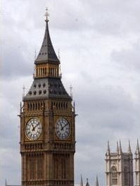

Whenever you think of London, you probably think of Big Ben. It it one of London's most recognized landmarks.
Here are some quick facts about Big Ben
Description: Big Ben is not actually the clock tower. It is the largest of the five bells inside the clock tower
Location: It is at the House of Parliament in Westminster, London
Constructed: Completed in 1856, it took 13 years to build. It is about 315 feet high and has 400 steps to reach the top.
Tourists: Bet you didn't know that foreign tourists are not allowed to climb the 400 steps to reach the top of the tower, but native Englanders can arrange a tour through a member of Parliament or a Lord. Please note that it is not wheelchair accessible.
Cost: Free
Content from respective websites - Used for learning purposes only